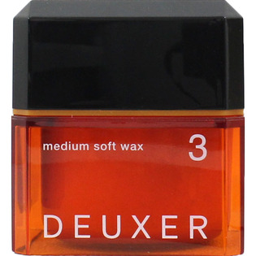

返回列表
产品名称：デューサー ミディアムソフトワックス 3

ナンバースリー デューサー ミディアムソフトワックス 3 ８０ｇ
メーカー ナンバースリー
JANコード 4985514032432
商品の特徴
エアリーな束感と毛先までの動き
- 成分・分量
- 水、マイクロクリスタリンワックス、コハク酸ジエチルヘキシル、セテス-10、ヒドロキシステアリン酸、BG、キャンデリラロウ、セテス-6、ステアリン酸グリセリル（SE）、ラフィノース、マカダミアナッツエステル、メトキシケイヒ酸エチルヘキシル、PEG-90M、水酸化Na、トコフェロール、BHT、メチルイソチアゾリノン、メチルパラベン、プロピルパラベン、香料
- 用法及び用量
- ＜使用方法＞
○少量を手のひらでよくのばしてから、髪になじませてください。
○使用後は必ずキャップをしめてください。